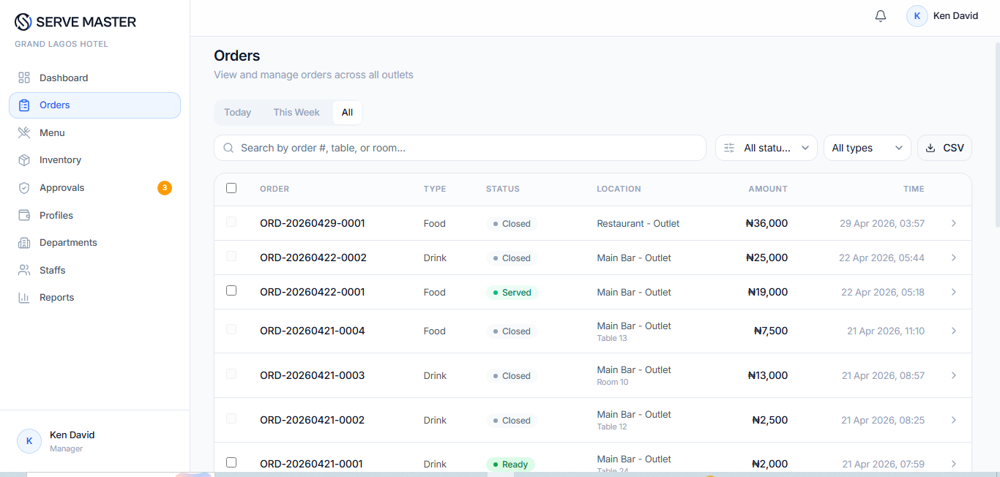
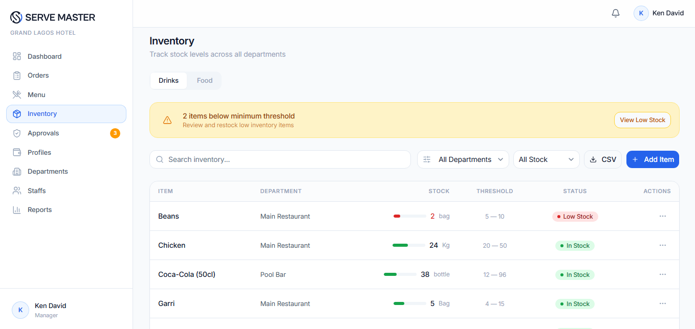
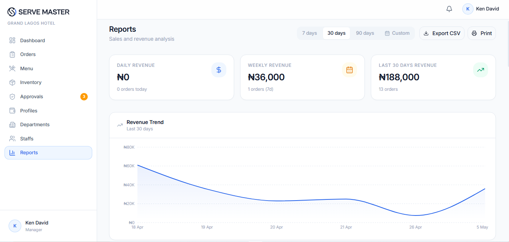

Managers don't need more reports. They need live operational visibility to make decisions while operations are still active.
A hospitality operations system built to help managers track orders,
monitor inventory, and improve revenue visibility in real time.
Hospitality businesses often struggle with fragmented operational workflows, delayed reporting, and revenue blind spots.
ServeMaster was designed to centralize operational visibility for managers by connecting order tracking, inventory monitoring, and revenue intelligence into one workflow system.
Most hospitality operations still rely on fragmented manual processes.
Orders are collected manually. Inventory is updated inconsistently. Revenue reporting happens too late.
This creates operational friction, reporting delays, and silent revenue leakage.
Through workflow analysis and stakeholder understanding, three critical operational patterns emerged.
Managers don't need more reports. They need live operational visibility to make decisions while operations are still active.
Revenue loss is often systemic. Operational leakages are frequently caused by workflow gaps, not bad staff behavior.
Adoption depends on stress reduction. Managers adopt tools faster when systems reduce daily uncertainty and decision fatigue.
ServeMaster was structured around three operational pillars.
Managers can monitor waiter orders in real time as they are collected.
Track stock movement, availability, and depletion live.
Monitor cash sales, debt, and room charges from one dashboard.
A simple operational dashboard designed for speed, visibility, and decision support.



Reduced reporting delays
Improved inventory accountability
Faster operational decisions
Better revenue visibility
Operational systems succeed when they reduce friction before introducing complexity.
Managers don't adopt software because it has more features. They adopt systems that make daily decisions easier.
Have a project in mind? I bring strategic research and service design into your next initiative. Let's have a conversation about what's possible.
Start a Conversation